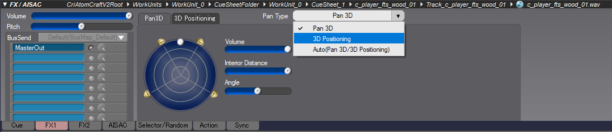
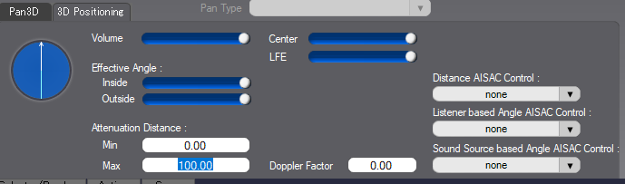
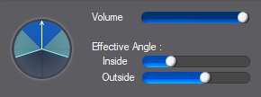
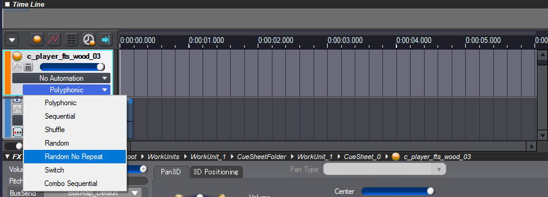

Overview
The following explains how to make use of ADX2's functionalities for sounds that are emitted from a specific spot in your level.
Setting Up the Audio Trigger Spot Entity in CRYENGINE
Using the Audio Trigger Spot Entity
CRYENGINE uses the Audio Trigger Spot Entity to play ADX2 Cues that emit sounds from a spot in your level. These sounds are called SpotFX and in AtomCraft, there are multiple options to influence how they are heard (on an Entity) in CRYENGINE.
Audio Trigger Spots can be found under the Audio category of the Create Object tool (Tools → Level Editor → Create Object), and can be placed anywhere in your level. For more information on Audio Trigger Spots, refer to the Audio Entities & Flow Graph Nodes documentation.
Working with Attenuation
Audio positioning can be of two types in AtomCraft: Pan 3D and 3D Positioning.
When a sound uses Pan3D, its playback position is set in AtomCraft and cannot be altered by CRYENGINE; this is similar to the concept of 2D positioned sounds in other middleware. 3D Positioning meanwhile has to be activated to allow CRYENGINE to position audio in a 3D Environment.
Pan3D is activated by default when an audio material is imported into AtomCraft, and so to position the sound at a 3D position defined by the Engine, the value of the Pan Type option needs to be set to 3D Positioning.
- Select the audio material that is placed on the audio track in the Cue, then switch to the FX1 tab of the FX/AISAC window.
- The Pan Type option is located within this tab. Set its value to 3D Positioning from the dropdown as shown in the image below.

Pan Type
To change the maximum distance over which a sound is audible:
- Select the master track of the Cue, then open the FX1 tab of the FX/AISAC window.
- In the 3D Positioning tab, set the Attenuation Distance → Max field to any value you like.

Attenuation Distance
After setting up the sound's attenuation, generate Binaries and connect the ADX2 Cue to an audio system Trigger and Audio Trigger Spot in CRYENGINE. The sound should attenuate according to the listener's distance from the Audio Trigger Spot Entity.
More complex attenuation behaviors can be achieved by setting Distance AISAC Control to Distance.
This AISAC Control can be used to modulate parameters such as volume and filters while the Attenuation Distance set in the FX1 tab is used as a reference. This means that the value of the AISAC Control (0-1) is relative to the Attenuation Distance (Min-Max).
Working with Cone Attenuation
ADX2's Cone Attenuation functionality influences how the player hears sounds based on their position around the sound-emitting Entity.
For example, a speaker should appear louder when the player is positioned in front of it rather than behind. This effect can be created in AtomCraft by changing the Cue's Effective Angle → Inside/Outside in the 3D Positioning tab.

Effective Angle
The sound of the Entity will play at a maximum value when the listener is within the Inside angle, and will be inaudible when the listener is outside the Outside angle. The volume of the Entity's sound hence transitions from inaudible to fully audible between the Outside and the Inside angles. Moreover, the Y-axis of the Audio Trigger Spot always points to the front of the cone.
After Core Attenuation has been enabled, you can rebuild all CueSheet Binaries and reload them into the ACE.
All the above functionality is also relevant to sounds that are not triggered by Audio Trigger Spot Entities. For instance, attenuation using ADX2 can also be used to set up triggers that can be called for material effects, particles or animations.
Please refer to the following pages for information on connecting Triggers for those use cases.
Randomizing Sounds on Audio Trigger Spots
An Audio Trigger Spot also offers randomization that allows sounds to be re-triggered at a certain time around a defined radius. This, for example, can be used to simulate the sound of seagulls at different points in the sky.
An example of this randomization can be found in the Audio Showcase tutorial.
- In AtomCraft, select a Cue with multi-sound effects (i.e., a Cue that contains more than one audio track).
- In the Time Line window, set the Cue's playmode to Random No Repeat using the dropdown on its master audio track as shown in the image below. This ensures that all of the Cue's audio tracks are played before the first track is triggered again.

Random No Repeat - Randomized re-triggering
- In CRYENGINE, select the Audio Trigger Spot and set Play Mode → Behavior (under the Lua Properties tab of the Properties tool) to TriggerRate.
- Set Play Mode → MinDelay and Play Mode → MaxDelay to define the time range in which the Trigger is re-triggered.
- Randomized positioning
- In CRYENGINE, set the X/Y/Z values of the Audio Trigger Spot's Play Mode → Randomization Area property as required. Randomization Area defines the size of the area box, in meters, within which the sound is randomly positioned when Play Mode → Behavior is set to Trigger Rate.
- The Randomization Area can be visualized in the Editor by enabling the Debug → Draw Randomization Area checkbox under the Lua Properties tab of the Properties tool.
Setting up this functionality in CRYENGINE is more efficient in terms of performance when using obstruction/occlusion on the audio. The randomized positioning of audio also takes into account the obstruction/occlusion of other materials placed between the sound's spawn point and the listener's position.
More on obstruction/occlusion can be found here.